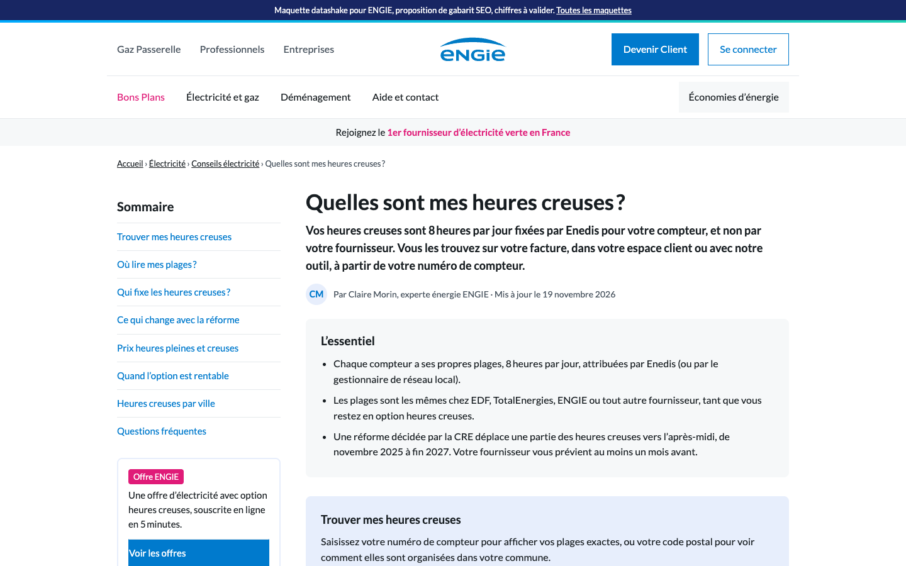
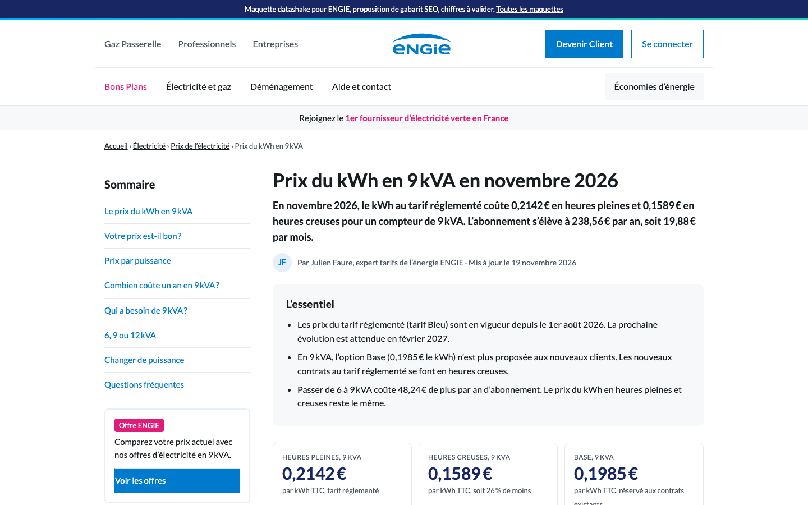
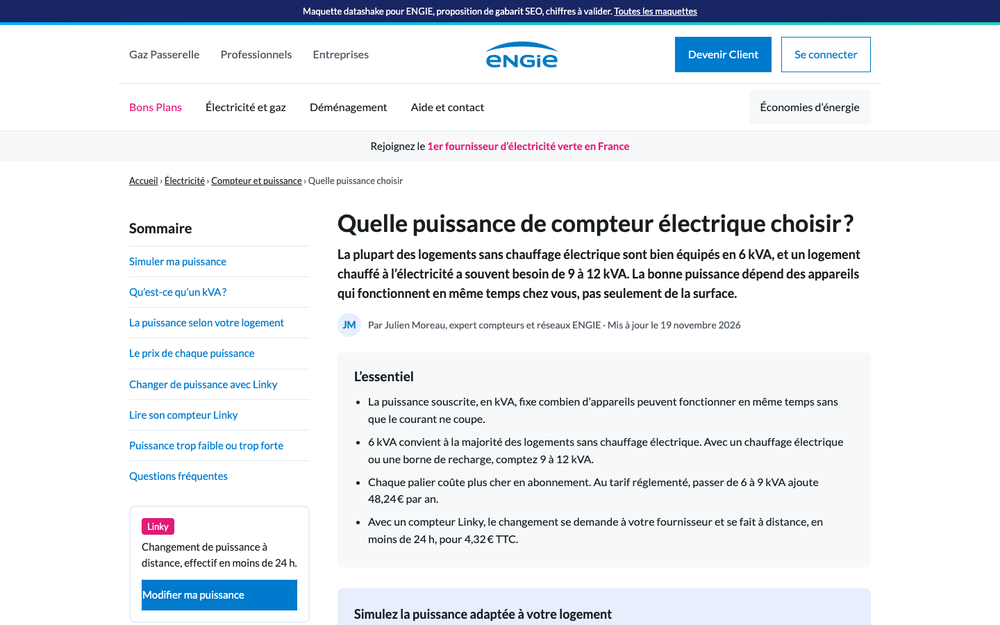
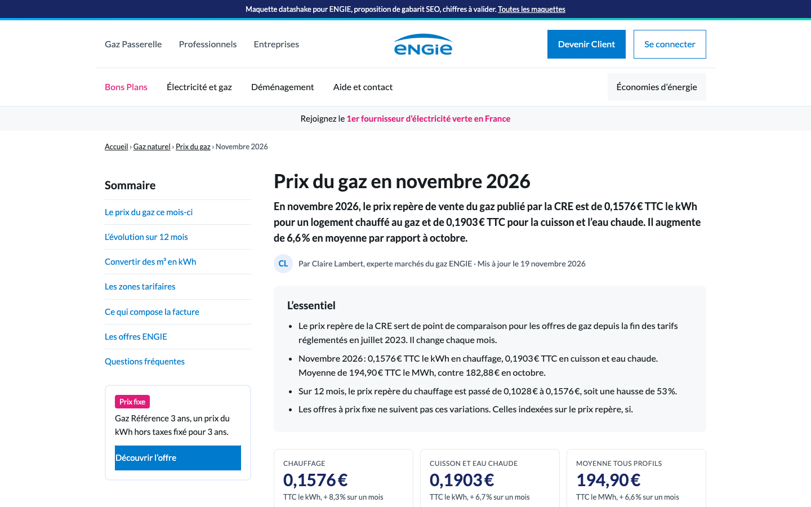
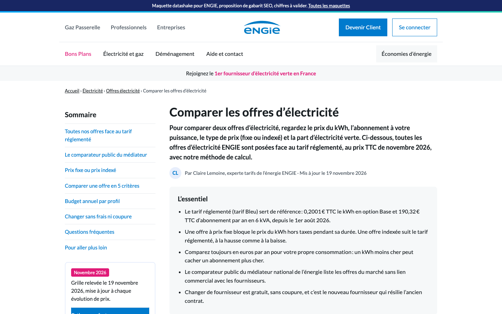
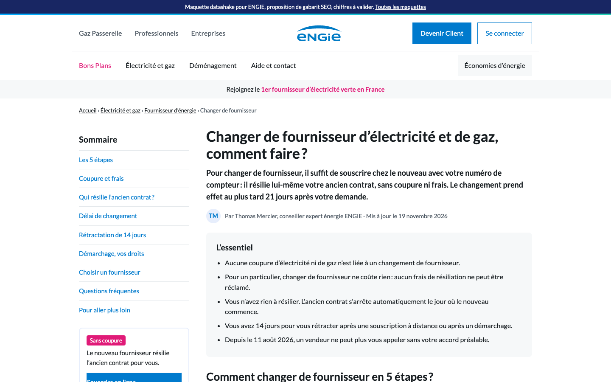
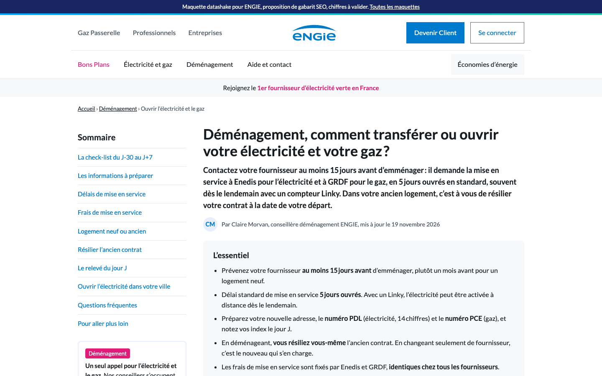
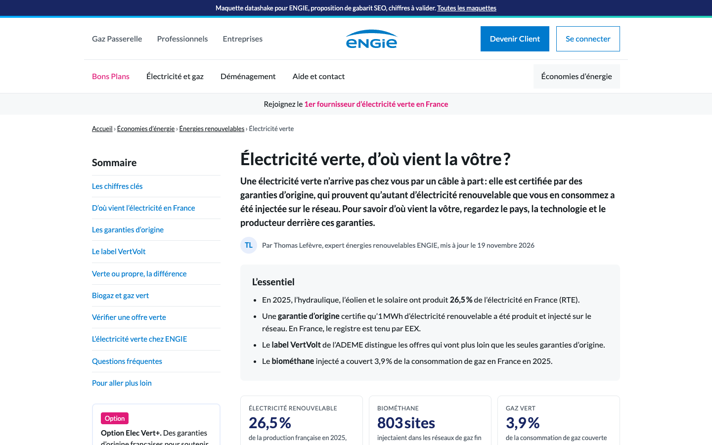

Vos 8 verticales en maquette
Une page par verticale, au gabarit de particuliers.engie.fr. Chaque maquette montre le gabarit qui se décline ensuite par ville, par mois, par puissance ou par profil.

Verticale 1
Heures creuses
Outil « Trouver mes heures creuses »
Verticale 2
Prix de l’électricité
Page par puissance, « Prix du kWh en 9 kVA »
Verticale 3
Compteur, puissance, consommation
Simulateur « Quelle puissance choisir ? »
Verticale 4
Prix du gaz
Page du mois, « Prix du gaz en novembre 2026 »
Verticale 5
Comparer et payer moins cher
Page comparative datée
Verticale 6
Choisir et changer de fournisseur
Guide en 5 étapes
Verticale 7
Démarches et moments de vie
Parcours « Déménagement »
Verticale 8